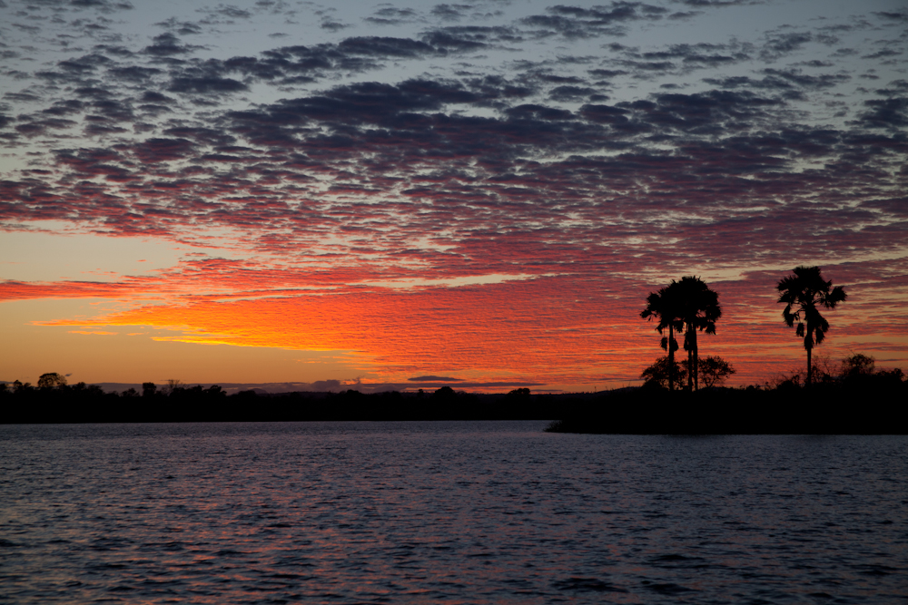

Researchers

Aleksei Saunders:
Current Project
Conservation of the ichthyofauna of Lac Tseny in north-western Madagascar. A population of Paretroplus menarambo, the Pinstripe Damba, were found here during a survey in 2010.

Sunrise on Lac Tseny